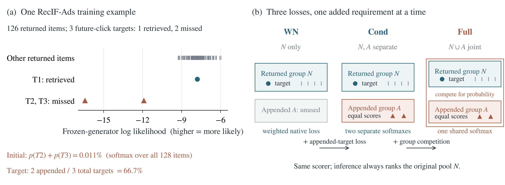
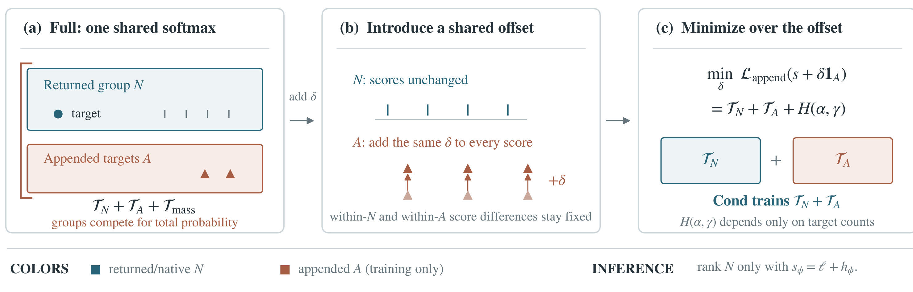
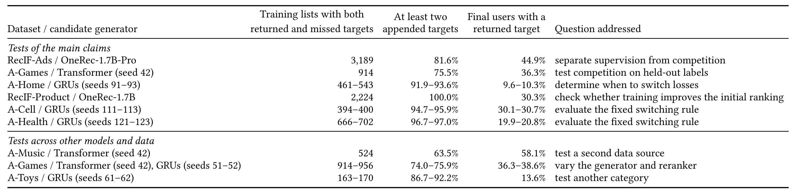
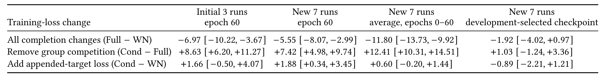
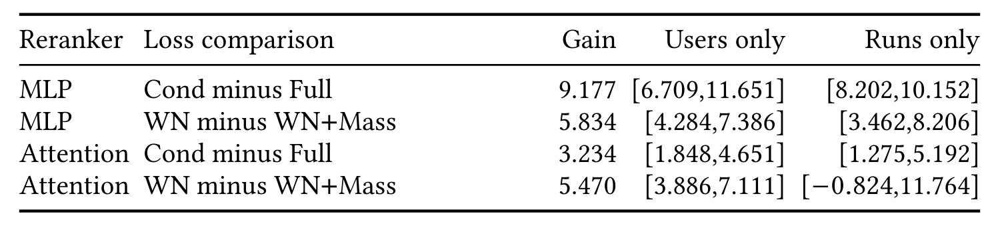
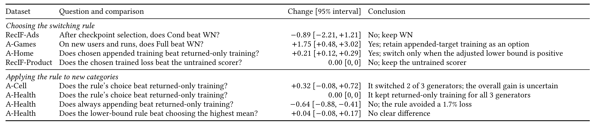
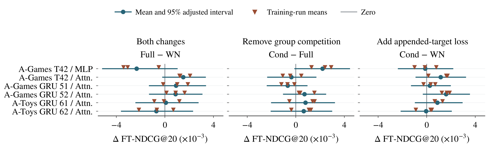
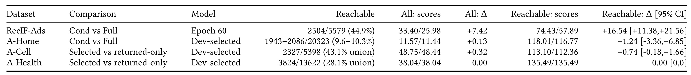
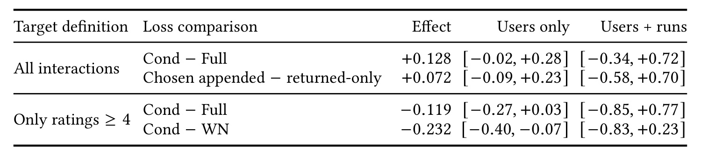

Training with Missed Targets in Generative Recommendation: Separating Supervision from Probability Competition
- 作者：Xuesi Wang、Yangbin Shi、Xiaolin Zheng；前两位为共同第一作者。
- 第一作者机构：独立研究者；合作机构：浙江大学。
- 首次公开：2026-10-07；本次精读：2026-10-08。
- 原文入口：arXiv:2610.10124。
- 代码/项目状态：未核验到独立代码或项目页；原文附录称 arXiv ancillary archive 提供代码、环境、划分清单与命令，归档内容本轮未独立核验。
1. 背景和问题
在重排器的训练候选中补入生成器遗漏的真实目标，会同时改变已召回目标的权重、增加遗漏目标监督，并使两组争夺概率；只比较追加与不追加目标，无法解释实际返回物品的排名为何改变。
生成式推荐以语义标识符作为检索接口：用户历史进入生成器，生成器产生物品标识符序列，再把有限数量的物品交给排序或验证模块。服务时的预算通常只能覆盖这个有限候选集合，因此在生成阶段没有进入候选的目标，后续重排再准确也无法把它送给用户。论文把问题限定在生成器固定之后：既然已经观察到用户未来点击了某些物品，却发现生成器没有返回它们，能否只在重排训练时补入这些物品，让共享打分器利用这些额外标签？这个操作看起来能减少标签浪费，但训练列表与服务列表从此不同，效果不能从“多用了正样本”直接推出。
这里的“目标”是观察到的未来事件，不必然是满意度或正向偏好。RecIF 的目标来自未来点击，Amazon 的目标来自用户末尾三个不同物品的首次评论。后一种构造包含低评分行为，因而“漏掉的目标”不等于“漏掉的高满意度商品”。论文专门保留只使用四星及以上目标的检查，说明这不是无关的标签细节。若把所有评论统一当作正反馈，再把它们补入训练池，优化目标可能是在拟合互动发生，而非用户更愿意看到什么。
图中的真实例子把训练分布的变化展示得很直观：生成器原先返回一百二十六个物品，三个未来点击目标中只包含一个；另外两个目标只在训练时加入。生成器对这些补入目标的初始概率总和仅为百分之零点零一一，但均匀多目标交叉熵要求它们拥有三分之二的总目标质量。模型不仅需要了解这两个遗漏物品，还要把大量概率从服务时存在的候选组转给服务时消失的组。两组的这种概率竞争是完整列表归一化自动产生的约束，通常不会在业务接口里显式出现。
Figure 1 左半边展示三个真实目标与其他返回物品的冻结生成器对数似然。遗漏目标的位置明显较低，两个目标初始质量与均匀监督目标之间存在巨大落差。右半边沿同一条路径展示 WN、Cond、Full：先只优化返回组，再增加补入组内部任务，最后增加两组共同归一化。图中“相同打分器、推理始终只排序原返回组”是实验解释的前提。两个补入目标没有进入服务集合，图中的改善只能来自训练参数如何影响返回物品的相对排序。该例子证明存在很强的训练约束变化，但单个例子的概率落差不能替代总体实验。
为什么简单的补入与不补入比较无法定位原因？首先，原始返回列表损失给每个已召回目标分配的权重，随补入目标数量增加而减小；其次，补入目标之间新增了内部概率任务；最后，它们与返回物品一起进入分母，又新增了组间质量配置任务。即使最终收益为正，也可能是额外监督有利、竞争有害而净收益仍为正；反过来，净收益为负并不说明遗漏标签没有价值。本文的贡献就是把这些变化写成严格的损失分解，并且为每个差值构造匹配对照。
邻近研究提供了一些启发，却没有覆盖同一个问题。多阶段级联优化会调整不同阶段之间的协作；采样 softmax 校正研究近似全目录归一化时的负样本偏差；曝光选择偏差和离策略评估关注日志策略的影响。本文保留生成器与候选渠道，关注重排训练期间额外加入的比较物品。机器翻译重排也观察过在训练候选中加金标准答案可能有害，这为训练与测试候选差异提供先例，但没有拆开推荐中的目标权重、额外监督、组间概率竞争。
论文借鉴剖面最小化消除一个共同位移参数，借鉴组内与组间知识分离的思路构建 Cond。不过，它的两组按服务可用性划分：一组在推理时返回，一组只在训练时出现。这与知识蒸馏里“目标类对非目标类”的划分不同，也与利用训练专属特征的特权信息学习不同。这里不是给同一个候选增加额外特征，而是训练列表本身出现了服务时不可见的物品。问题的独特性就在于归一化的对象发生变化，但被评估的返回候选保持不变。
阅读本文时还要区分四种结论。数学分解是在明确条件下成立的恒等式；统一位移让 Cond 不变是在实现和数值精度上检验的机制；固定预算下的效果来自特定数据与训练配置；开发集规则是否能推广，则需要独立类别上的决策验证。这四层证据不能相互替代。尤其不能把固定轮数的明显提升外推为任何训练预算下都会提升，或者把独立类别避免损失解读为对所有生成器自动追加目标都安全。作者实际主张的是按生成器决定是否使用补入训练，并给出保守选择过程。
服务候选固定也为实验给出一个明确上限：假如一个用户所有目标都在返回池之外，无论重排器如何训练都得不到非零命中。于是重排比较应该关注可用物品的顺序，却又不能只在可达用户上报告效果。作者采用完整目标分母和全用户均值，正是为了同时保留服务上限与排序收益。这比只报告候选内部准确率更接近整条链路的表现，但仍没有把候选生成误差消除。对于有多路召回的系统，论文中的原返回池可能只是一个渠道，后补标签也可能来自其他渠道；如果部署时这些其他渠道实际上参与融合，本文训练专属组假设就需要重新定义。固定池结论的迁移首先依赖边界是否相同，而不是生成器是否也使用语义标识符。
2. 方法
2.1 返回候选、遗漏目标与残差打分
符号解释：令用户历史为 $x$，完整观察目标集合为 $Y_x$，生成器可表示的物品空间为 $\mathcal I$，返回候选为 $N(x)$。物品的语义标识符是若干离散 token，这条路径在教师强制下逐 token 计分，路径长度由标识符决定，比较内部解码温度固定。冻结生成器给出路径对数似然：
补入集合只含可表示且确实遗漏的目标，训练列表是 $C=N\cup A$。没有删除原返回物品，也没有在评估时利用目标补全候选。完整列表的每个已观察目标获得相同概率份额，非目标只进入归一化分母，因此遗漏数量直接影响已召回目标的质量。重排器在冻结生成器分数上加可学习残差：
残差使用固定用户状态、物品状态和候选标量特征。最后输出层零初始化，因此训练前恢复生成器排序，提供可以保留的未训练基线。注意力模型也只以返回候选为上下文；补入物品不会进入上下文的键和值。这一限制很重要，否则“增加补入组”还会改变所有候选的表示，便无法把两个损失的差异归因到监督或概率竞争。输入中的来源成员身份也不是特征，避免模型直接利用“这个目标是后补的”这一标签线索。
2.2 候选补全改变的三项损失

Figure 1 在方法层面说明对照如何嵌套：从左侧概率落差转向右侧三种损失，返回候选内部的监督都按同一权重保留，而补入目标的训练要求分两步增加。左图两个遗漏目标并未成为线上候选，右图的箭头也没有改变召回流程。三种打分器各自训练后仍在相同返回列表上比较，才能把第一步差值归为新增内部任务、第二步差值归为新增竞争。补入组内所有物品都是目标，均匀概率要求对应图中的相等分数标注；Full 的外框则表示两组共享一个概率分母。模型参数在训练时接收两组梯度，这为后面“未服务物品影响服务排序”的推导提供了具体接口。
设已召回目标数 $r=|N\cap Y|$、补入目标数 $k=|A|$，并要求两者都为正。返回组与补入组在均匀目标分布中的质量分别是 $\alpha=r/(r+k)$ 与 $\gamma=k/(r+k)$。两项权重的和为一，表示目标数份额，而不是候选物品数份额；一百多个返回非目标不会增加返回目标权重。将两组各自归一化，定义：
因为补入组中的每个物品都是目标，所以其内部任务不是把正样本压过组内负样本，而是把目标概率变均匀、鼓励这些目标分数相近。论文没有把它伪装成包含大量负例的新判别任务。在返回组内部，已召回目标仍要与所有返回物品竞争，因此这项依然具有原来的排序任务。完整追加损失可以精确分解为：
推导只需把每个物品的联合概率写成“组概率乘组内条件概率”，再分开求和。因此三项不是事后命名的近似成分，而是可分别保留的原损失。WN 固定返回目标权重为与 Full 相同的 $\alpha$，Cond 在这个基线上加 $T_A$，Full 再加 $T_{\rm mass}$。 初始未加权 Native 损失与 WN 不同，不能把两者混用。事实包采用的 WS/WC 是分离监督与联合竞争的描述性别名；本文原文以 Cond/Full 命名，后文统一使用原文名称。
2.3 条件训练、共同位移与推理传导
给所有补入分数加相同的临时位移 $\delta$。这不会改变任一组内部排序，却会把 $Z_A$ 变为 $e^\delta Z_A$，从而改变两组概率质量。这个变量只用来剖析损失的自由度，与模型学到的逐物品残差参数区分开来；改变它不等于重新训练一个生成器。对完整损失求导，最优位移满足：
二阶导数是预测组概率的伯努利方差，有限分数且两组目标数为正时严格为正。因此对共同位移的最小点是唯一的，组概率在该点恰好匹配目标数份额；保留的两个内部归一化项不需要随位移重算。最小化消去的正是组间竞争，只留下由目标数量确定的熵常数：

Figure 2 从联合归一化开始，中间只对橙色补入组进行同幅度移动，蓝色返回组不变。两组各自的分差都保留，右侧最小化后留下两个内部任务与一个仅依赖目标数的常数。这个常数没有打分器梯度，因此实现直接训练两个条件损失之和；不需要在线求解位移，也不会把这个位移保存到推理打分里。图底部的服务定义仍是用原来的残差分数排序返回组，避免把数学推导误读成服务时校准不同召回渠道的操作。固定一个初始位移也不等同于 Cond，因为训练更新后最优位移通常随分数变化。
三种匹配损失与推理影响写为：
第一因子是补入组预测质量与标签要求的差，第二因子是两组平均分数梯度的差。虽然补入物品服务时消失，训练时仍更新同一打分器参数，所以返回组内部排序会受到影响。这解释了为什么不能凭“推理没有补入物品”断言追加监督对服务无影响。Cond−WN 检验额外内部任务，Cond−Full 检验去竞争，Full−WN 同时混合两者；其恒等关系是 $(V_F-V_W)=(V_C-V_W)-(V_C-V_F)$，两项可能抵消。
边界条件也决定训练范围。只有一个补入目标时，其组内概率恒为一，$T_A=0$，Cond 等于 WN；没有遗漏目标时无需补入，损失退化为返回组损失；没有召回任何目标时无法在三损失之间比较返回正例排序，主匹配训练排除此类列表。但评估仍保留这些用户，其全目标指标为零。这样既保证训练比较的可识别性，又没有用过滤难用户来抬高最终分数。
2.4 多来源、软标签与判别监督控制
附录把机制推广到多个互斥来源组 $S_g$，组目标质量为 $\gamma_g$，组概率为 $P_g$。每个来源允许一个共同位移，固定其中一个消除整体平移冗余：
若目标有归一化非负权重 $q_i$，令 $\rho_B=\sum_{i\in B}q_i$，组内按 $q_i/\rho_B$ 加权，则最优位移成为 $\log(\rho_A/\rho_N)+\log Z_N-\log Z_A$，最小化仍得到组内加权损失加质量熵。零质量组用无限位移极限处理。这说明分解不是均匀标签专属，但论文实验并没有因此证明多来源上线收益。
另外，Disc 用补入目标对返回非目标做配对判别，不依赖联合 softmax：
每个补入目标的总权重仍为 $\gamma/k=1/(r+k)$。空配对集合时该项取零；返回组的 NP 基线则用同样配对形式训练返回目标与返回非目标。Disc 不是 Cond 的同义词：前者包含跨组判别，后者只在补入组内部归一化。实际选型允许它们同时竞争，反映“消除概率竞争”的机制发现并不等于“永远选 Cond”的部署规则。
3. 实验结果
3.1 数据、可达性与统一评估口径
实验包括发布的 OneRec 与本地 Transformer/GRU 生成器。RecIF-Ads 用 OneRec-1.7B-Pro，固定状态投影为一百二十八维，解码温度一点二；RecIF-Product 用 OneRec-1.7B。本地模型使用训练前缀的协同嵌入与残差量化构造标识符，beam 宽度六十四。每个生成器种子重建候选、表示和符合条件的训练列表，所以不同生成器不是只换一个重排初始化。用户按哈希划为生成器训练、重排训练、开发与最终评估，防止同一用户串入多个角色；评估互动不参与特征频率统计。

Table 3 的第二列限定同时有返回与遗漏目标的训练列表，第三列显示其中至少遗漏两个目标的比例。RecIF-Ads 有三千一百八十九个匹配列表，其中百分之八十一点六的补入内部任务非零；A-Games 主设置只有九百一十四个列表。最后一列前的可达率是最终用户返回池是否存在任一目标，并非模型准确率。A-Home 可达率只有约百分之十，A-Cell 单生成器约百分之三十，限制了任何固定池重排能获得的总体分数。低可达率同时使有限样本的相对变化看起来较大，不能把表中比例当作所有用户的推荐成功率。
主指标以完整目标集合计算理想排序分母：
遗漏目标仍留在分母，零可达用户仍留在全用户平均。候选条件 NDCG 则移除不可达目标，数值不可与这里直接比较。Recall@20、MRR@20 作为辅助指标也保留池外目标。生成器没有改变，因此本文没有提升全池召回覆盖；排序调整可以改变前二十位命中率，但不能把不可达目标变成可达。二者必须区分。
3.2 OneRec 的固定预算收益与选模限制
重排器使用残差 MLP 或两个块的注意力模型，后者宽度一百二十八、四个头；优化器为 AdamW，batch 六十四，权重衰减万分之一，梯度范数裁剪一。RecIF-Ads 先做三个训练运行，再做七个新运行检查。六十轮时 WN、Cond、Full 的全目标 NDCG 分别是零点零三一五二七、零点零三三四零五、零点零二五九八二，Cond 相对 Full 的绝对差为零点零零七四二三。

Table 4 的单位是千分之一，正数表示第一种损失更好。七个新运行在第六十轮去竞争的差为加七点四二，区间加四点九八至加九点七四；增加补入组任务则为加一点八八，区间加零点三四至加三点四五。可是开发折选检查点之后，Cond−Full 仅加一点零三，区间负一点二四至加三点三六；Cond−WN 变成负零点八九，区间负二点二一至加一点二一。三个开发选模差值都包含零，因此这张表既支持特定预算下的机制危害，也明确限制了“Cond 始终更好”的解读。
训练过程平均优势以归一化梯形积分衡量：$\mathrm{AULC}=T^{-1}\sum_j(t_{j+1}-t_j)(d_j+d_{j+1})/2$。去竞争在零至六十轮平均优势是零点零一二四一，区间零点零一零三一至零点零一四五一。这支持 Full 在这段优化过程中承受额外困难，却不保证最终最优模型存在同样差距。延长到二百四十轮后，两种学习率下 Cond−Full 分别为负零点零零零六四、正零点零零二七零；选择二十五个已记录检查点中的最好点后，则为正零点零零一二零、正零点零零一零八。训练长度和选模方式改变了差值大小乃至方向。
作者对初始化概率做了直接干预：只给全部补入分数加相同位移，让其初始组质量等于标签要求，不改变任一组内排序。Full 的 NDCG 提高零点零零九二三三，区间零点零零六八三八至零点零一一六四三，七次运行方向一致；WN、Cond 不变。这个实验比观察 Full 训练较差更有机制针对性，因为候选、特征、预算、组内排序都保持，而被操纵的就是两组概率质量。但这是对已知训练列表的离线控制，不能当作一个可以直接把测试标签用于服务校准的功能。
3.3 A-Games 的四个预设去竞争对照
A-Games 在开放最终标签之前固定生成器、比较、学习率与运行，最终评估使用九千一百二十一个独立用户。除了 Cond−Full，还比较 WN−WN+Mass：后一组不增加补入组内部任务，只往 WN 加质量竞争，因此能检查去竞争收益是否依赖额外监督同时存在。

Table 6 四行分别给出 MLP 与注意力在两种损失配对下的收益，单位仍为千分之一。MLP 的去竞争差为九点一七七、五点八三四，注意力为三点二三四、五点四七零；对应相对提升百分之二十二点二三、十二点八四、七点八三、十三点一六。四个用户重采样区间都大于零，但注意力 WN−WN+Mass 的训练运行区间负零点八二四至十一点七六四跨零。因而准确说法是四个点估计都支持去竞争，四个用户区间和其中三个跨运行区间排除零；不能说全部四个跨种子结果统计显著。
用户区间固定已训练重排器，只刻画评估用户抽样不确定性；训练运行区间刻画三个重排运行之间的变化。这不是把两个区间拼成一个范围，而是两种不同统计条件。只有三次训练运行时跨运行区间尤其不稳定，作者使用自由度为二的较大临界值。比较中每一次训练方向一致仍不消除有限运行数的限制，特别是第四行。
另一组分数位移实验在十二个运行中让 Cond 的路径与参数数值一致，而 Full 发生变化。A-Games 注意力的 Cond−Full 从负零点零零零三五八变为正零点零零四零四九，变化为正零点零零四四零七，区间正零点零零一五九一至正零点零零七一七七。这里的设置属于扩展对照，不能与预设主比较直接合并平均。它的作用是验证损失对组质量位移的敏感性，不是给所有配置增加一个新的普遍提升数字。
3.4 生成器逐个决策与独立类别测试
实践中不是只比较三项损失差，而是决定具体生成器用哪一种训练。作者先在开发集分别选最佳返回组损失与最佳补入损失，再看八次运行的配对开发收益是否在校正后下界大于零。返回候选包括 WN 和原生配对 NP，补入候选包括 Cond、Full、Disc。五次新运行与新的最终用户评估这个决策；规则在 A-Cell、A-Health 训练之前已固定，类别各有三个新 GRU 生成器。

Table 5 将建立规则与应用规则分开。A-Cell 三个生成器有两个转向 Disc、一个保留 WN，全用户增益零点零零零三一九，用户区间负零点零零零零七七至正零点零零零七二零；同时重采样生成器与训练运行后区间进一步扩大。A-Health 三个生成器全部保留返回组损失，变化为零；强制最佳补入损失反而降低约零点零零零六四四，对应百分之一点七。表中“避免损失”有相应独立类别对照，而“新类别提升”在 A-Cell 整体尚不确定。规则与简单最高均值选型的差也没有排除零。
作者把开发下界按三个生成器校正，进一步按十八个潜在损失对校正，决策仍不变。这个检查说明在当前有限候选集内，选择结果不依赖最弱的校正方案，但不能保证任意扩展搜索空间仍然有效。RecIF-Product 的开发最优模型是未训练初始化，规则因此保留原始生成器分数；这提醒评估必须允许“不训练重排器”作为真实选项。若强制所有实验都提交一个训练后模型，会隐藏初始排序已经更好的情形。
3.5 跨配置稳定性、可达子集与反馈定义

Figure 4 并列显示 Full−WN、Cond−Full、Cond−WN，统一横轴有利于观察净效应与两个分项的关系。六种生成器与重排器组合中大部分经族级校正的区间跨零，部分去竞争差值的点估计甚至为负；因此主 A-Games 的强结果不能遮盖扩展配置不稳定的事实。三角形是训练运行均值，不是更多独立用户实验。在加入用户与运行共同不确定性的十个额外比较里，只有 A-Games Transformer 种子四十二的 Cond−WN 区间排除零。这一图支持逐生成器测量，也解释了为什么不能只靠单次离线最高分决定补入。各面板共用横轴，使两个分项与净变化在相同尺度下可视比较；图中经校正横线比单次结果更宽，反映作者同时检查多个预设差值，而不是事后只呈现方向有利的配置。

Table 7 在同一模型下分别报告全部用户和存在返回目标的子集。RecIF-Ads 六十轮的全用户 Cond/Full 分数是三十三点四零与二十五点九八，可达子集是七十四点四三与五十七点八九，单位均为千分之一。分数抬高主要因为剔除了零可达用户，不能称为新的算法提升。A-Cell 的可达集合按多个生成器并集统计，百分之四十三点一也不能直接替代 Table 3 中单生成器的百分之三十左右。实际评估应先固定人群与分母，再比较损失，避免在不同表之间挑一个更大数字。A-Home 子集上两种损失的差仍有包含零的区间，A-Health 则因选择策略保留原损失而得到精确零差。子集分析有助于解释重排作用，却不会恢复所有被生成器遗漏的用户。

Table 8 把 A-Home 的目标从所有互动改为四星及以上，去竞争的点估计由正零点一二八变为负零点一一九，均以千分之一为单位。只保留好评时 Cond−WN 为负零点二三二，用户区间负零点四零至负零点零七，但同时纳入训练运行后区间负零点八三至正零点二三跨零。两组结论揭示标签定义与不确定性层级都可能改变解释。不能把“所有互动”条件下的方向稳定外推到满意度任务，也不能把仅用户显著等同于重新训练稳定。对线上推荐而言，曝光、点击、好评与转化对应不同目标分布，复制同一补入策略需要重新验证。该表的“所有互动”行对应改变标签前的相同 A-Home 条件，另一列联合区间还考虑生成器和重排运行；两列差异强调重复训练也属于不确定性来源，不能只增加测试用户来代替。
4. 总结
本文最有价值的部分是一个可识别的比较结构：将候选补全分成返回目标权重、补入组内部监督、组间概率竞争，再用匹配损失只改变其中一项。Cond 的剖面推导说明可以从完整列表交叉熵中消去组概率质量约束，而不改变组内排序任务；共享参数梯度解释为什么一个服务时消失的组仍会影响实际返回物品。A-Games 主实验与统一位移控制提供了相互补充的经验支持，固定六十轮 RecIF-Ads 则展示了较强效应及其优化时间依赖。
应用含义是训练时补入目标应按生成器验证，且允许保留返回组训练或未训练初始化。 它没有解决遗漏目标的检索问题，没有改变服务候选，也没有证明 Cond 在所有数据上优于 Full。训练分布与服务分布不一致可以通过损失约束进入共享参数，这是应检查的具体路径；但额外标签本身是否有用、哪个判别任务最好，需要独立开发与最终评估，而不是依据数学分解直接做选型。
至少有四项边界需要保留。第一，主匹配训练要求已召回与遗漏目标同时存在，这个人群不覆盖所有用户的学习问题，虽然最终评估保留全用户。第二，本地 Amazon 训练列表有些只有数百个，主要主对照只有三次重排运行，有限训练方差导致区间宽。第三，固定预算效应与开发选模效应不同，六十轮收益不保证充分训练后仍然存在；初始化和学习率也是关键条件。第四，Amazon 评论事件并非全部正偏好，只用好评会改变点估计与显著性。第五，所有结果是公开二级数据上的离线排序指标，缺少在线曝光、满意度、转化与业务收益证据，无法直接承诺线上提升。
后续可沿三个问题推进。首先，在实际固定召回池上保持返回目标权重一致，复现 WN、Cond、Full 与 WN+Mass 四个对照，同时把学习率、预算、初始化、检查点选择都固定，确认效应是否来自同一竞争项。其次，增加训练运行数并同时报告用户、运行与二者联合重采样区间，给切换规则设业务最小有用收益，而不只以大于零为门槛。再次，分别以点击、好评、转化和多渠道目标构造标签，检查多源条件损失与判别监督是否保持方向，最后再通过受控线上实验确认服务价值。这些是基于本文设计的跟进方向，不能算作论文已完成的验证。
复现时还应单独核验作者所述辅助归档是否可下载、划分清单能否重建候选，以及冻结状态提取与路径似然是否一致。本文提供详细参数与划分规则提高了可复查性，但本轮仅完成原文阅读与图表证据核对，没有执行训练，也没有验证归档代码的完整性；这些状态不应与方法理论成立混写。